P2-0064 «Факт без сети» — сейчас / предлагаю
Настоящие экраны приложения на стенде (подставной сервер, без интернета). Данные одинаковые: ЖК Тестовый, Корпус 1, Секция 1, Этаж 1, «Кладка стен» — план 40 м³, внесено 7 м³. В «Предлагаю» прораб без сети закрыл этаж целиком (33 м³) и внёс ещё 45 м³.
- Без сети факт вносится: одной строкой и «Закрыть этаж целиком». Запись лежит на телефоне и уходит сама, когда появится связь. Повторная отправка дубля не создаёт.
- Пометка «Не отправлено: N» у работы, в окне ячейки шахматки и значок ↑ в ячейке; блок «С этого телефона ещё не ушло» над журналом; факт — в общем списке «Отправка».
- После отправки — статус от сервера: «принято» или «на проверке» (перерасход). Отказ — «Сервер отклонил: причина» у работы и в «Отправка», кнопка «Отправить снова».
- Без сети по-прежнему нельзя: исправить запись, решение РП, бригады, КС-2 (кнопки неактивны).
«Факт → Ввод»: этаж и работа без сети — телефон 375, светлая
Сейчас: без сети только просмотр, вносить факт нельзя. Предлагаю: «Внести» и «Закрыть этаж целиком» работают; после записи — «Сохранено на телефоне … уйдёт само», у работы оранжевая строка «Не отправлено: 78 м³». Подсказка вверху говорит, что без сети можно и что ждёт интернета.
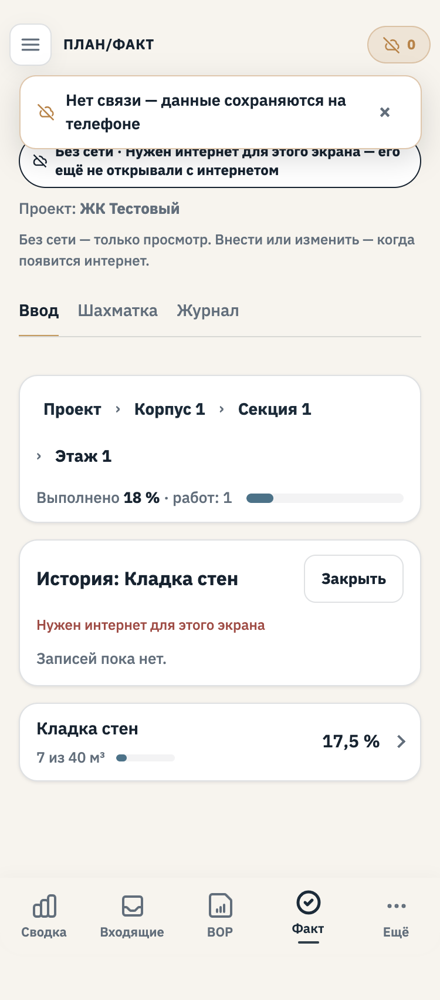
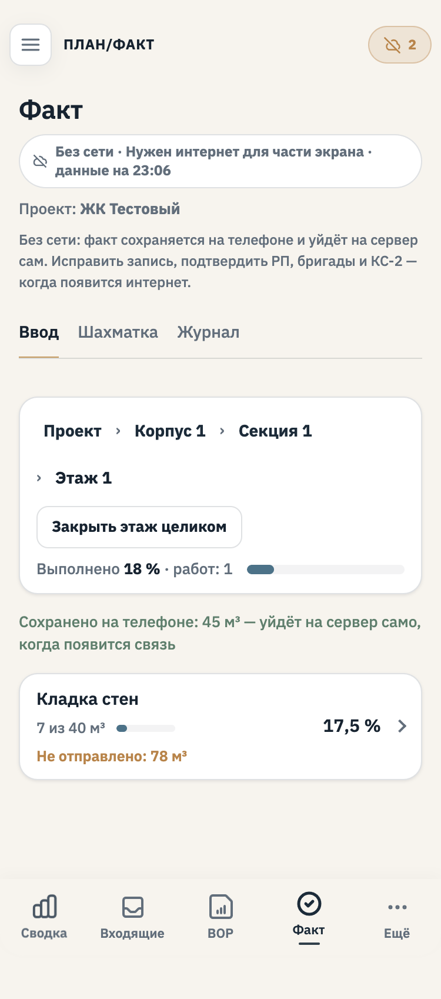
«Факт → Ввод»: этаж и работа без сети — компьютер 1440, тёмная
Сейчас: без сети только просмотр, вносить факт нельзя. Предлагаю: «Внести» и «Закрыть этаж целиком» работают; после записи — «Сохранено на телефоне … уйдёт само», у работы оранжевая строка «Не отправлено: 78 м³». Подсказка вверху говорит, что без сети можно и что ждёт интернета.
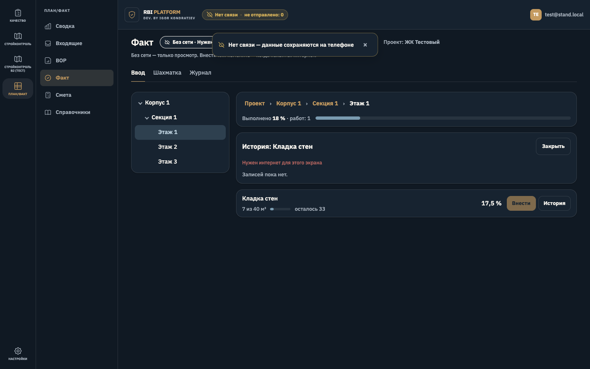
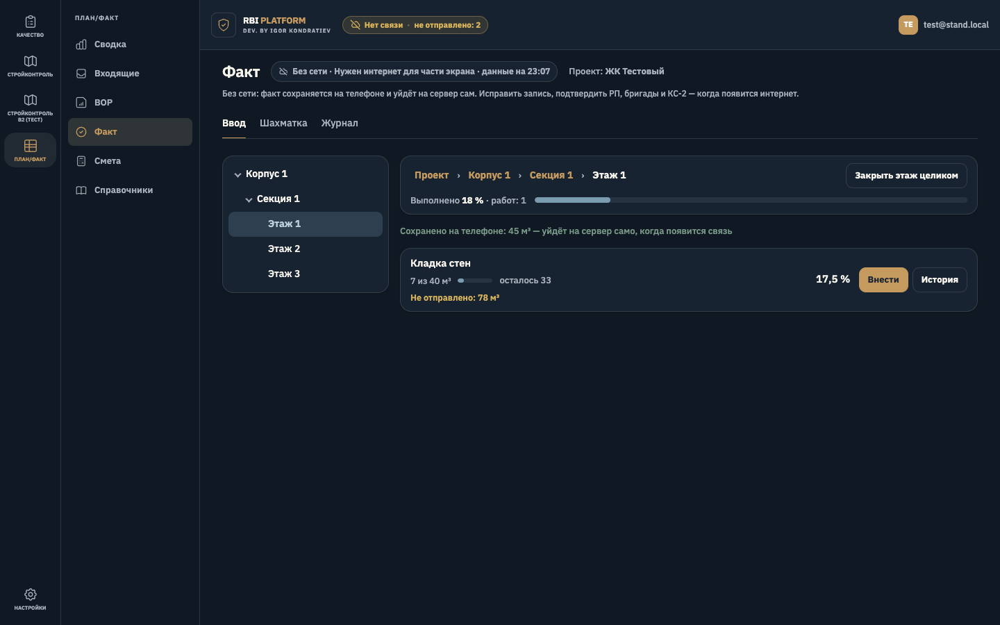
Форма ввода без сети (телефон) — телефон 375, светлая
Обычная форма ввода; без сети она работает так же, как с сетью.
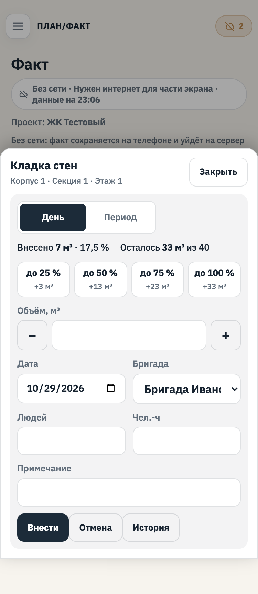
«Шахматка» без сети — телефон 375, светлая
В ячейке и в шкале — новый значок ↑ «не отправлено с телефона» (рядом с прежними «ждёт РП» и «отклонено»).
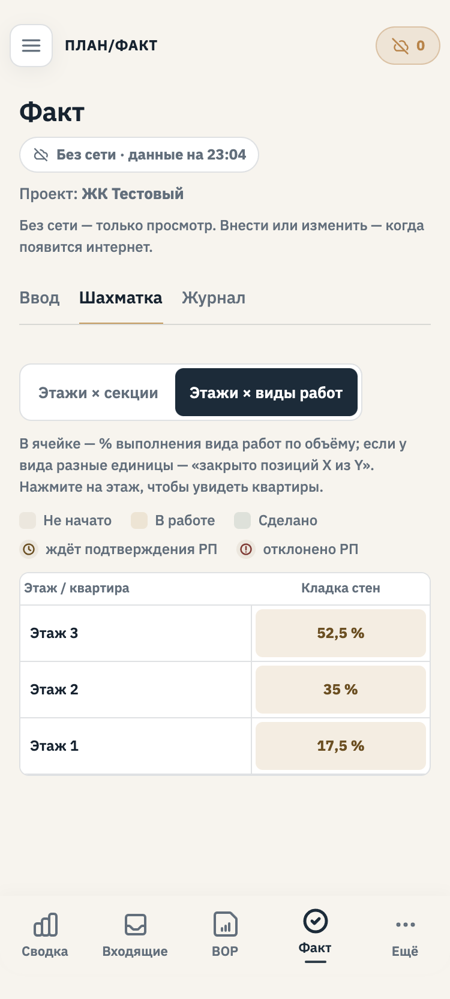
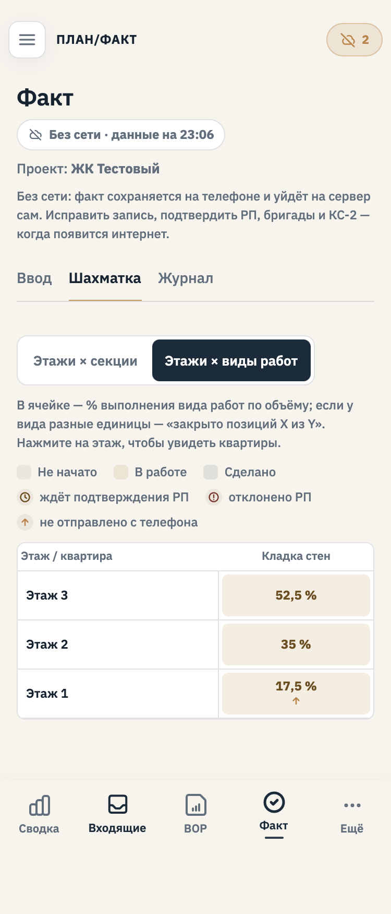
«Шахматка» без сети — компьютер 1440, тёмная
В ячейке и в шкале — новый значок ↑ «не отправлено с телефона» (рядом с прежними «ждёт РП» и «отклонено»).
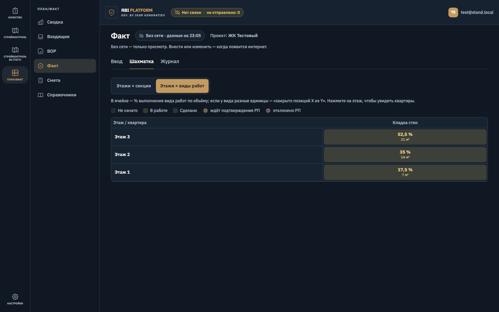
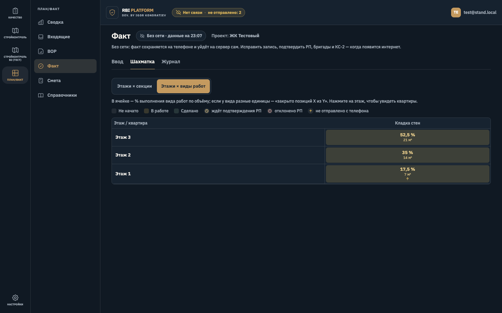
Ячейка шахматки с фактом на телефоне — телефон 375, светлая
В окне ячейки у работы — та же строка «Не отправлено: 78 м³»; «Внести факт» и «Закрыть этаж» без сети доступны.
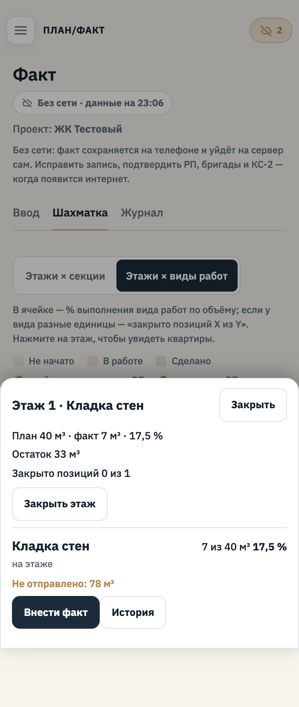
Ячейка шахматки с факт ом на телефоне — компьютер 1440, тёмная
В окне ячейки у работы — та же строка «Не отправлено: 78 м³»; «Внести факт» и «Закрыть этаж» без сети доступны.
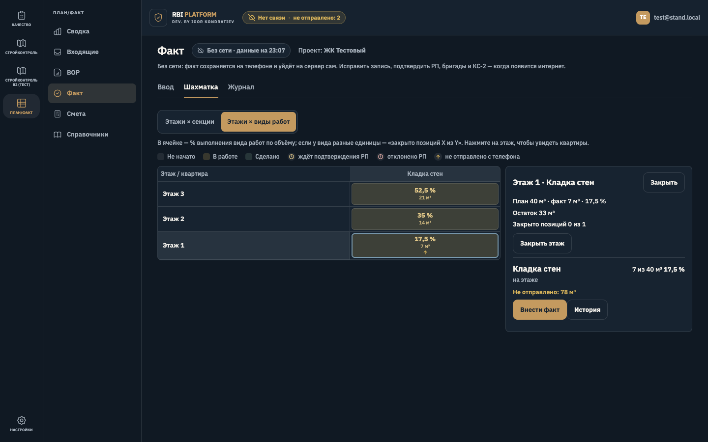
«Журнал» без сети — телефон 375, светлая
Над журналом — блок «С этого телефона ещё не ушло: N»: работа, дата, место, бригада, объём, жёлтый значок «Не отправлено» (отклонённая сервером — красный с причиной). В журнал и итог запись попадёт после принятия сервером.
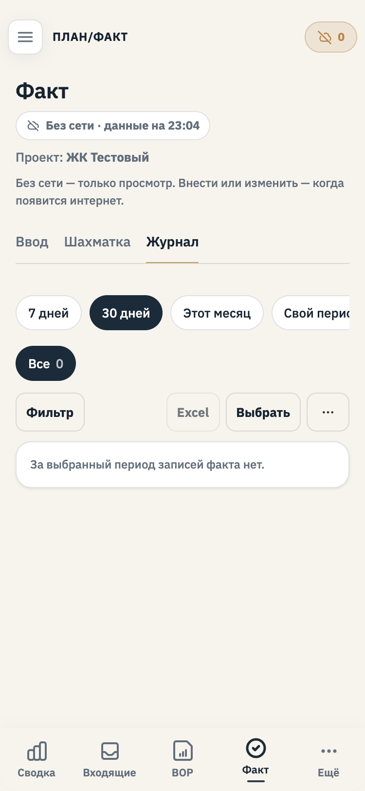
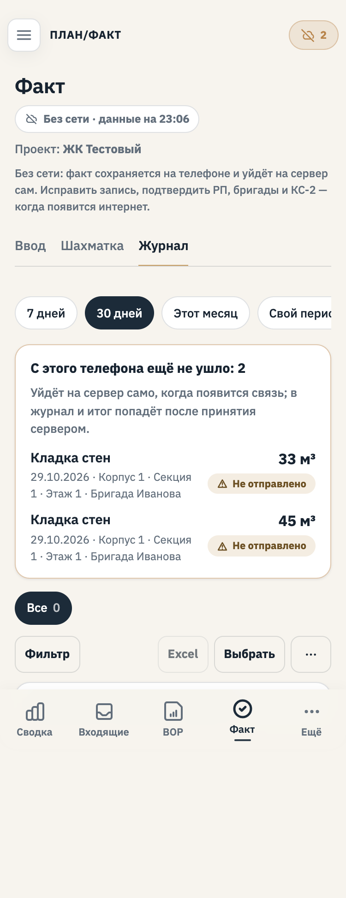
«Журнал» без сети — компьютер 1440, тёмная
Над журналом — блок «С этого телефона ещё не ушло: N»: работа, дата, место, бригада, объём, жёлтый значок «Не отправлено» (отклонённая сервером — красный с причиной). В журнал и итог запись попадёт после принятия сервером.
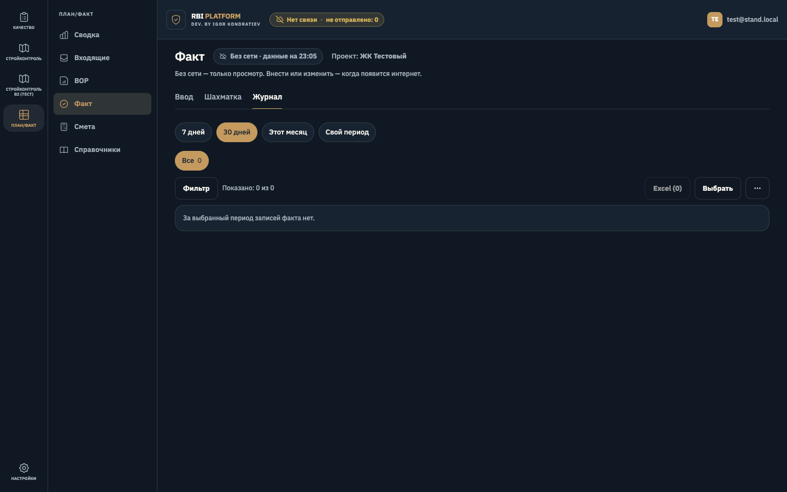
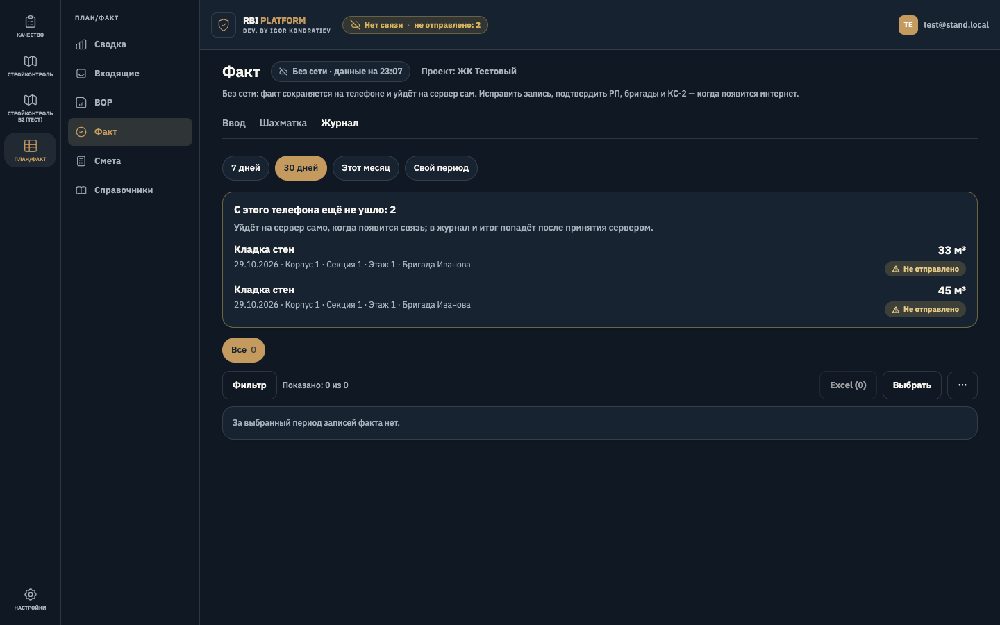
«Настройки → Данные на устройстве → Отправка» — телефон 375, светлая
Факт виден в общем списке «не отправлено» вместе с осмотрами: «Факт · Кладка стен · Корпус 1 · … · 45 м³», причина и кнопка «Отправить снова».
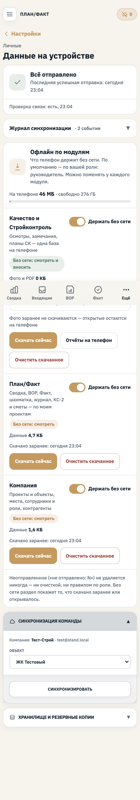
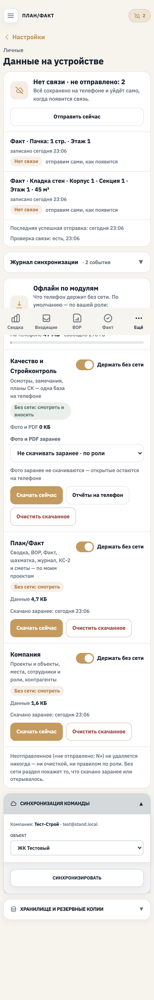
«Настройки → Данные на устройстве → Отправка» — компьютер 1440, тёмная
Факт виден в общем списке «не отправлено» вместе с осмотрами: «Факт · Кладка стен · Корпус 1 · … · 45 м³», причина и кнопка «Отправить снова».
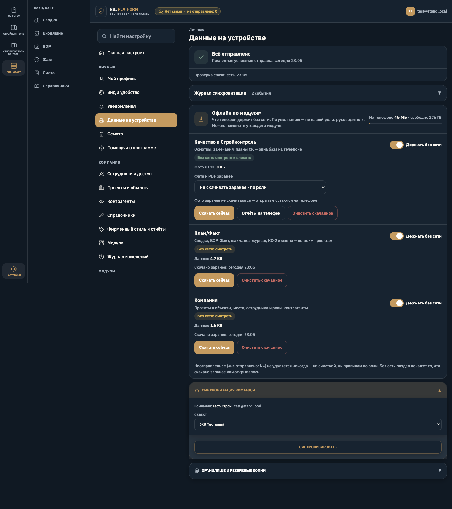
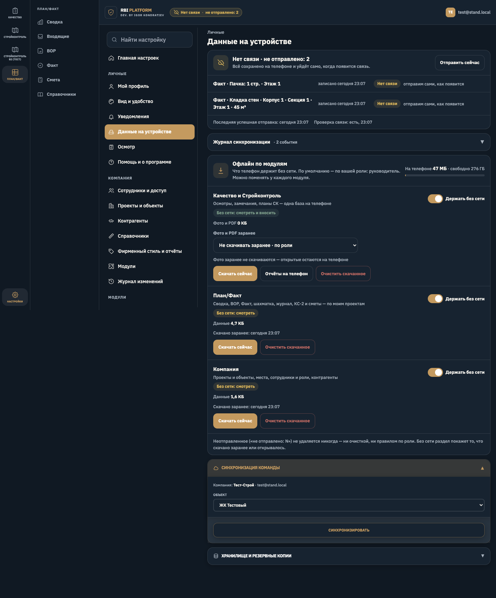